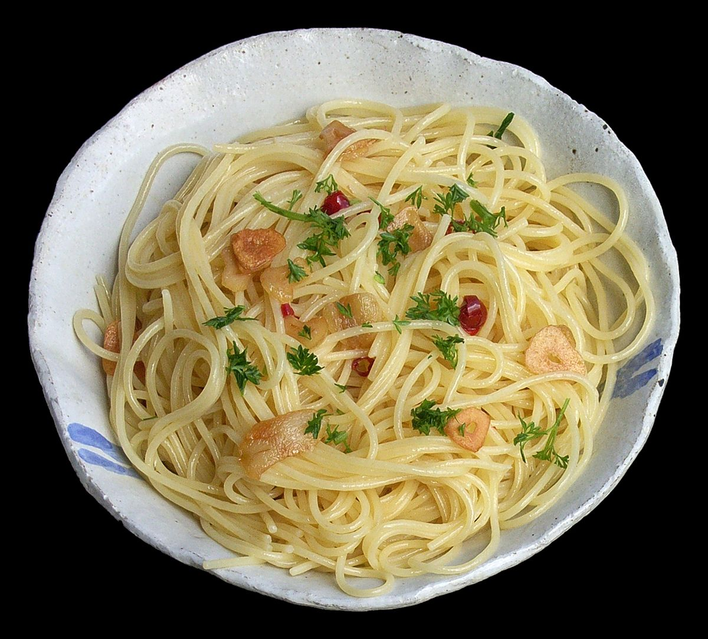

Italian dishes are usually very simple with very little ingredients, so they are reliant on both the quality of ingredients and the skill of the cook who made it.
However, Italian dishes can still be good even without top notch ingredients and can be cheap to make, making it ideal for homecooks to practice and try out the cuisine.
Spaghetti Aglio e Olio

Name literally meaning spaghetti with garlic and oil, this classic pasta dish is really easy to make at home with just the mentioned ingredients. Just by boiling the spaghetti, toasting the sliced garlic and some red pepper flakes in olive oil and transfering the pasta and some of its boiling water to the pan that is used to toast the garlic, you have an extremely delicious pasta dish in just about 10-20 minutes and you can totally add anything you'd like in it such as the traditional parsley and red pepper flakes.
Spaghetti Carbonara
Although simple at its core with simple ingredients, this pasta dish can be tricky to get right. The egg mixture that is used for the sauce could curdle in a flash when not handled well. However, the payoff for mastering this dish is amazing as you have easy access to a rich, creamy and flavorful pasta dish in about 10-20 minutes
Gnocchi
This simple dumpling made commonly with a mix of potato and flour can be the carrier of any sauce and be absolutely lip-smacking.